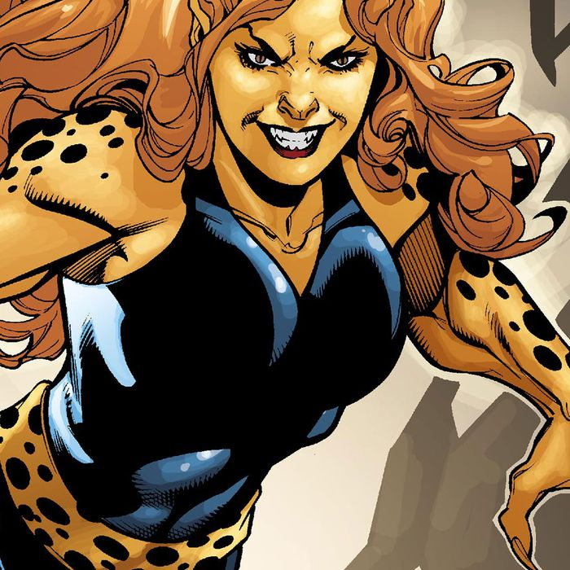

Barbara Ann Minerva
The current Cheetah, Barbara Ann Minerva.
He is a former archeologist and treasure-hunter who sold her soul to the plant-god Urtzkartaga for power and immortality, not realizing she would be bound in eternal servitude to him.
She, aside from Circe and Ares, is arguably Wonder Woman's deadliest archenemy.
Super Powers
Super strength, endurance, speed, agility, reflexes, senses and hand-to-hand combat skills.
cheetah physiology obtained from the god Urzkartaga

Directions to the lair of your nemesis
1. maryville to take car to Kansas.
2. I will go to indian Ocean from kansas.
3. I will move to neraest island from indian ocean.
4. from that island to wonder woman will bring me to new earth.
Link backto the index